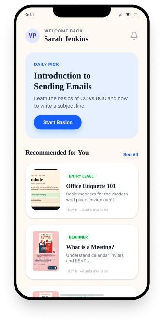
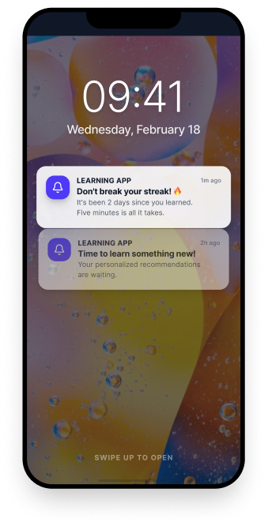
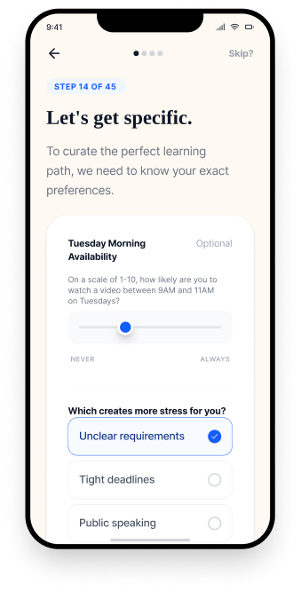
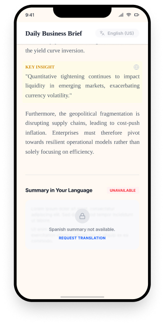
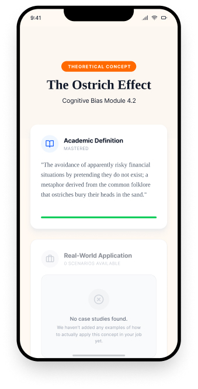
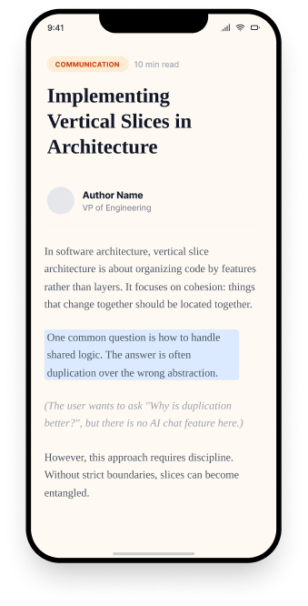
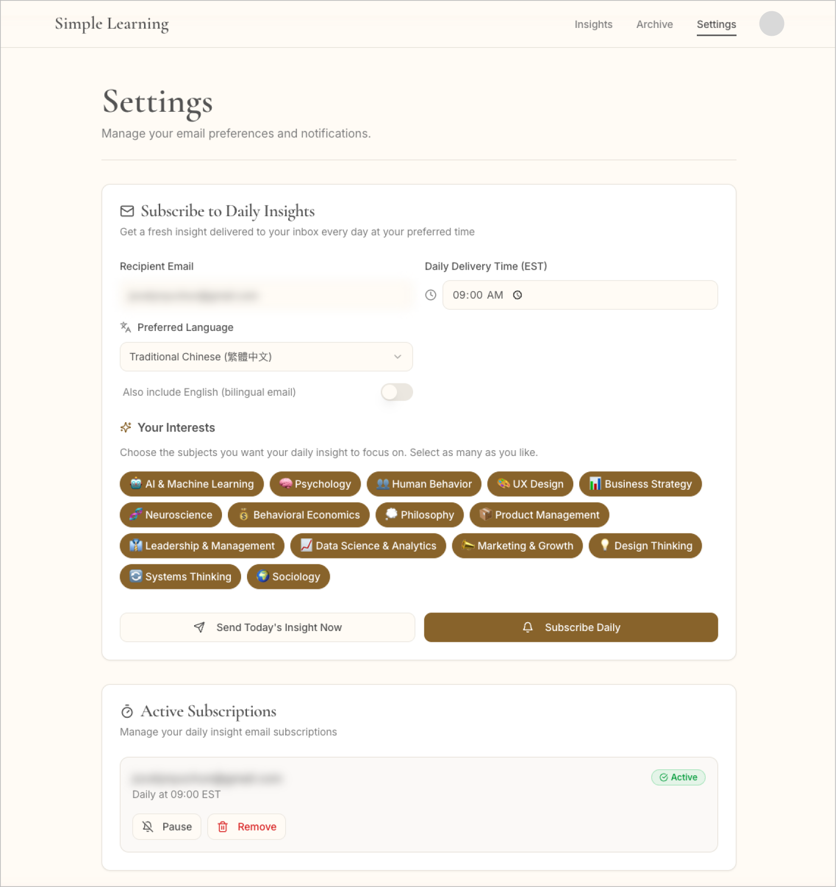

The Insight Engine: AI-Powered Personalized Learning
A personalized, AI-generated learning experience — content dynamically created based on each user's profile, interests, and learning goals. MVP shipped in one weekend; iterated and polished over 8 days.

From Information Overload to Practical Wisdom
As a design leader with broad curiosity across many disciplines, I'm constantly exploring new ideas. Yet most learning platforms promise personalization while still delivering the same generic content to everyone.
The problem isn't the lack of information — it's the lack of usable understanding. Many platforms simply deliver information but rarely show how that knowledge can be applied in real-world situations. Without practical examples or context, it's difficult to translate new ideas into everyday decisions, work, or behavior. On top of that, much of the content is filled with jargon rather than explained clearly. I believe that if you can't explain something to a 10-year-old, you probably don't fully understand it.
The experience is also fragmented, with knowledge discovery and learning scattered across different platforms instead of integrated into one system. Many tools also require users to constantly check the app rather than delivering insights automatically.
Language also affects learning efficiency and speed. While I work in English daily, I can absorb and internalize complex ideas significantly faster when concepts are explained in my native language. When learning something new, reducing cognitive friction matters.
Conversations with design leaders upskilling in AI revealed the same friction points — the problem isn't lack of content, it's that existing tools deliver the wrong content, in the wrong format, at the wrong time.

Generic Content
Existing platforms deliver the same material regardless of expertise, learning style, or career trajectory — a senior director gets identical content as a mid-level designer.

Broken Continuity
No system remembers previous sessions or builds progressively on acquired knowledge. Users must context-switch back into learning mode each time.

App Proliferation
Each subject requires a different platform — one for tech news, another for psychology research, a third for design trends. Cognitive overhead actively discourages learning.

Language Friction
Most platforms deliver content exclusively in English with no native-language support — forcing non-native speakers to decode jargon before they can absorb the concept.

Theory Without Practice
Platforms teach abstract concepts without connecting them to practical job contexts — users master definitions but can't apply the knowledge to real-world situations.

Passive Content
Educational articles are delivered as static, one-way content — when learners have follow-up questions, there's no interactive way to get personalized explanations.
5+ Apps Per User → Generic Content → No Memory Between Sessions → Push Notification Fatigue → Friction Between Curiosity And Learning
How LLMs Solve Each Pain Point
Each pain point maps directly to a capability that large language models uniquely enable — turning limitations of traditional platforms into design opportunities.
AI-Curated Personalization at Scale
Use LLMs to deliver insights tailored to each user's goals and subject interests — moving beyond generic, one-size-fits-all content.
Personalization LayerBilingual Cognitive Access
Deliver insights in English and Chinese — reducing cognitive load for bilingual users and enabling deeper comprehension.
Language IntelligenceFrictionless Daily Ritual
Push insights directly to email — removing app-switching fatigue and letting learning integrate into existing daily routines.
Habit ArchitectureCross-Domain Knowledge Synthesis
Bridge psychology, neuroscience, philosophy, and design into unified insights — connecting disciplines that modern tools treat as silos.
Knowledge GraphCompounding Growth Over Time
Build a personal insight archive — enabling reflection, visible progress, and the satisfying experience of knowledge compounding.
Retention EngineEnd-to-End Builder Narrative
Showcase full-stack fluency — Claude API, Supabase, Resend — as a tangible portfolio signal of AI-native product thinking.
Portfolio Proof PointOne Engine, Infinite Personalization
The architecture separates who the user is (profile context) from what they need (content strategy) from how they receive it (personalized output). No two users get the same insight.
Process / System ArchitectureThe end-to-end flow from builder input to user delivery — showing how 6 services connect to generate and deliver personalized daily insights.
Five Layers That Power Every Insight
Instead of storing educational content, the system generates knowledge dynamically using user context and AI reasoning.
Two Touchpoints, One System
The product works through two complementary experiences: an app for personalization and exploration, and a daily email for proactive learning delivery. Together, they create a frictionless learning habit.
The App Experience
Configure, explore, and go deeperThe Daily Email Experience
Proactive delivery, zero frictionThe Insight Engine In Action
A functional MVP built in one weekend — user authentication, profile capture, AI-generated personalized insights, and multilingual support. Try the live app below or open it directly.
The personalized settings dashboard once a user creates an account. This MVP is currently in closed testing and has not yet been scaled for open registration.

What Broke, What I Tried, What Worked
Building with AI tools isn't a straight line. These are the real debugging stories from my build diary — each one forced a pivot that made the final product more resilient.
The Cron Job Nightmare
Email Template Persistence
Duplicate Emails & Wrong Sender
Traditional Learning vs. The Insight Engine
The comparison highlights what changes when you apply AI personalization to the learning workflow.
System Capabilities
A weekend MVP that grew into a fully functional AI product — measured by system complexity, automation reliability, generation capability, and personalization scale.
System Capability
- 51+ AI insights generated during testing
- 15+ subject domains supported
- 4 reading levels of adaptive content
- 2 languages generated in a single request
Automation Pipeline
- 6 integrated services (Claude, Supabase, Resend, etc.)
- 100% email delivery reliability after cron migration
- ~5 sec generation-to-delivery latency
Scalability Potential
- 1,000+ personalized insight variations based on user profiles
- 365 insights per user annually with automated scheduling
- Architecture supports unlimited subject expansion
Key Lessons From Building My First AI Product
As a designer, creating UI in Figma is familiar and relatively straightforward. What proved more important was understanding the workflow and constraints of the AI development stack. Before designing polished interfaces, I needed to experiment with the tools, APIs, and integration patterns to confirm what could actually work.
Building early prototypes helped me understand how the system behaves — response time, data flow, and feature feasibility. In AI products, validating what is technically possible should come before designing the final experience.
While integrating multiple tools and platforms, I learned how sensitive these systems can be to configuration changes. A small setting change in one platform can break synchronization across several services, and diagnosing the issue can take hours — especially for designers without deep engineering backgrounds.
Instead of over-optimizing architecture, I learned to prioritize solutions that work reliably. In fast-moving AI workflows, pragmatic solutions that keep the system running are often more valuable than perfectly engineered ones.
Phase 2: Multi-User Personalization
Phase 1 proved the core concept works. Phase 2 transforms the app from a single-user prototype into a scalable, multi-user platform with deep personalization — already in progress.
Phase 2: In Progress
- Authenticated user accounts with onboarding wizard
- Expanded subject library with 40+ topics across growing categories for personalized selection
- 4 reading levels (Explorer → Learner → Practitioner → Expert)
- Any-language support with 3 delivery modes (English, English + native, native only)
- Time zone-aware email scheduling
- Live preview of AI tone at each reading level
Future Roadmap
- Insight archive with full-text search
- Streaks & gamification for habit formation
- Audio narration for learning on the go
- Weekly digest for re-engagement
- Collections for structured learning paths
- Free / Pro / Premium subscription tiers